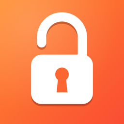

Terms of Use
Effective October 8, 2026
Agreement
Unlocky is distributed through the App Store under Apple's Licensed Application End User License Agreement. These terms add to that agreement. By using Unlocky you accept both.
Health and safety
- Unlocky is not a medical device and does not give medical, health or fitness advice. Rep counting and form feedback are automatic estimates and can be wrong.
- You set the exercises and the number of reps yourself. Choose amounts that are safe for you, warm up, exercise at your own pace, and stop immediately if you feel pain, dizziness, shortness of breath or discomfort.
- If you are pregnant, injured, have a heart, joint or other health condition, or have not exercised for a while, talk to a doctor before doing push-ups, squats or jumping jacks.
- Make sure you have enough free space, a stable non-slip floor and a securely placed phone. Do not exercise where you or others could be hurt.
- Unlocky is meant for adults managing their own phone use.
You are always in control
Nothing in Unlocky forces you to exercise. You can lower the number of reps, turn off locking in Unlocky's settings, switch off Unlocky's access in the iPhone Settings app under Screen Time, or delete the app at any time. Locked apps can always be reached this way, so never push through pain or exhaustion to open an app.
No warranty
Unlocky is provided free of charge, "as is" and "as available", without warranties of any kind, to the extent permitted by law. We do not promise that locks, unlocks, rep counting or notifications will always work as expected, for example after an iOS update or if Screen Time access is changed. Do not rely on Unlocky in situations where blocked or unblocked access to an app could cause harm.
Limitation of liability
To the fullest extent permitted by law, the developer is not liable for any injury, health problem, loss or damage arising from exercising with Unlocky, from how you configure it, or from apps being locked or unlocked. Nothing in these terms limits liability that cannot be limited under the law that applies to you, such as liability for death or personal injury caused by negligence, and your statutory consumer rights are not affected.
Changes
If these terms change, the new version will be published on this page with a new effective date.
Contact
Questions: ultim8digital@gmail.com